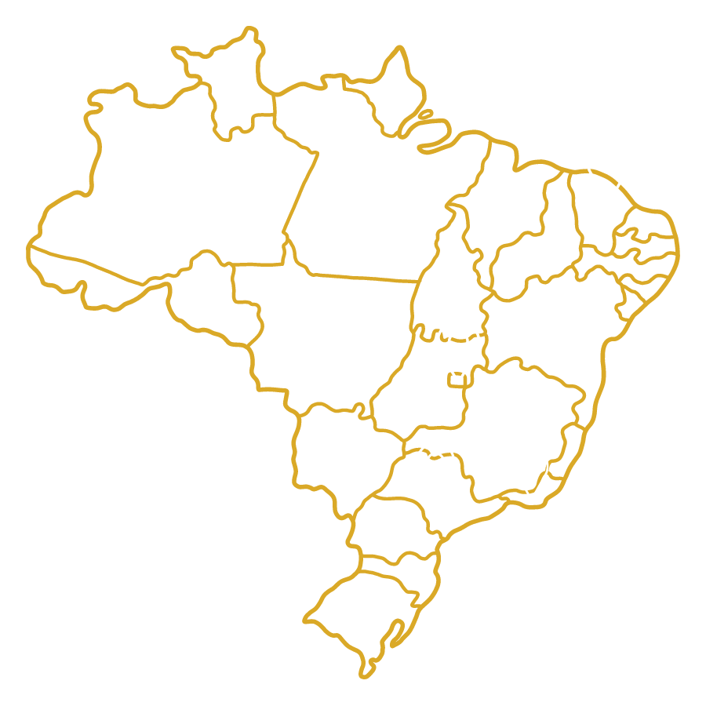

Quem Somos
Nossa História
A APS surgiu através da reunião de propósitos das Advogadas Allana Pereira e Ana Carolina Sampaio que já tinham tido a oportunidade de trabalharem juntas na administração pública. A seguir, houve o convite ao Advogado Tributarista André Luiz Amaral, com o intuito de resolverem em conjunto uma ação específica. O resultado foi um sucesso, e a consequência foi a união dos três sócios para atuarem em outros processos administrativos e judiciais.
Missão
Oferecer soluções jurídicas com excelência de forma eficaz e inovadora .
Valores
Valorizamos o trabalho em equipe, unindo competência, união e eficiência. Nosso compromisso com a integridade e ética é inabalável.
Nossos Diferenciais
O escritório possui advogados com ampla experiência jurídica (prática e teórica), seja na participação de litígios, seja na produção de materiais (artigos, textos, livros, etc.) relacionados aos temas mais complexos e recentes.
Possuímos tecnologia moderna para pesquisa, análise e apoio em cases administrativos ou judiciais, visando a melhor solução, com a maior rapidez.
Ampliação permanente de parcerias com escritórios e profissionais de renome no Estado do Pará e em outros Estados, que facilita a resolução de conflitos de forma mais ágil, colaborativa e eficiente.
Público Alvo
Todo e qualquer contribuinte, seja pessoa física ou pessoa jurídica não apenas do Estado do Pará, que almeja a resolução diligente de temas perante o Poder Judiciário (ações judiciais) ou no contexto administrativo em órgãos públicos municipais, estaduais ou federais.
Especialidades
Direito Tributário
◽ Defesas judiciais e administrativas (qualquer órgão público) referente a todos os impostos, contribuições e taxas (inclusive a TFRM Mineral).
◽ Recuperação de créditos tributários.
◽ Restituição de ICMS.
◽ Acompanhamento permanente e pessoal dos casos.
◽ Análise de riscos e definições de estratégias.
◽ Acompanhamento de ações nos Tribunais Superiores (STJ e STF).
◽ Consultoria e Elaboração de Pareceres sobre assuntos de alta complexidade.
◽ Planejamento Tributário.
Direito Empresarial
◽ Análise e elaboração de contratos de sociedades empresariais.
◽ Execução judicial de contratos e de títulos extrajudiciais.
◽ Restituição de ICMS.
◽ Acompanhamento permanente e pessoal dos casos.
◽ Análise de riscos e definições de estratégias.
◽ Acompanhamento de ações nos Tribunais Superiores (STJ e STF).
◽ Defesas administrativas (Requerimentos / Recursos) e judiciais (Mandados de Segurança, Embargos, Ações Ordinárias, etc.).
◽ Fusões e aquisições empresariais.
Direito Administrativo
◽ Acompanhamento de empresas em procedimentos licitatórios municipais, estaduais e federais;
◽ Análise de contratos administrativos, seja de prestação de serviços, seja de execução de obras;
◽ Defesas de agentes públicos em sindicâncias, processos administrativos disciplinares e tomadas de contas especiais
◽ Defesas administrativas (todos os órgãos públicos) e judiciais (qualquer instância de julgamento).

O escritório também tem atuação nas áreas pública (Penal, Previdenciária e Trabalhista) e privada (Civil: Contratos, Família e Sucessões). Temos escritórios parceiros em vários municípios do Estado do Pará e nos Estados de São Paulo, Rio de Janeiro, Minas Gerais, Ceará e na cidade de Brasília.
Equipe
ANDRÉ LUIZ AMARAL DA SILVA
SÓCIO FUNDADOR
ANDRÉ LUIZ AMARAL DA SILVA
Atua como Advogado Tributarista e Professor de Direito Tributário e Processo Tributário em cursos de Graduação e Pós-graduação. É autor de vários artigos e obras na área tributária, além de ser Doutor em Ciências Jurídicas e Doutorando em Administração Pública.
ALLANA PEREIRA
SÓCIA FUNDADORA
ALLANA PEREIRA
Advogada especializada em Direito Público, com enfoque em Constitucional, Administrativo e Tributário. Abrange, com eficiência, diversas áreas que regulam as relações entre o Estado e os cidadãos.
ANA CAROLINA MACHADO SAMPAIO
SÓCIA FUNDADORA
ANA CAROLINA MACHADO SAMPAIO
Advogada administrativista e servidora pública com Pós-graduação em Direito Público; possui ampla experiência na análise de processos licitatórios e contratos administrativos.
Contato
Possui alguma dúvida? Clique no botão abaixo. Responderemos o mais breve possível
ATENDIMENTO VIA WHATSAPP